Unterwasser
Kameramann
Underwater
Cinematography
Spielfilm · TV-Produktionen · Werbung · Europaweit
Feature Films · TV Productions · Commercials · Europe
Ausgewählte Arbeiten Selected Work
Auszug aus Film- und Fernsehproduktionen.
A selection of feature films and tv-productions.
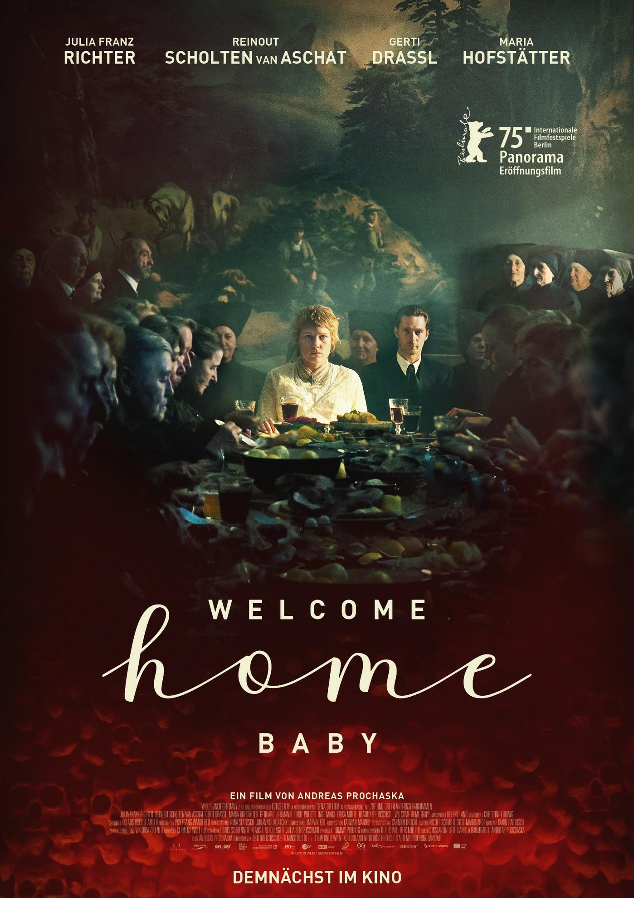
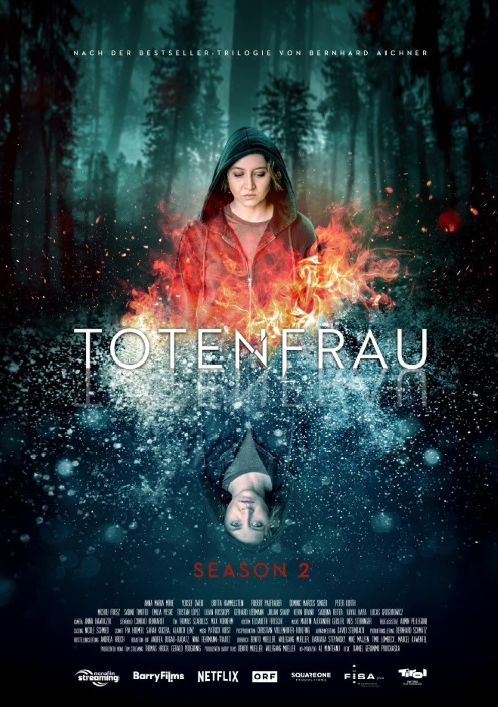
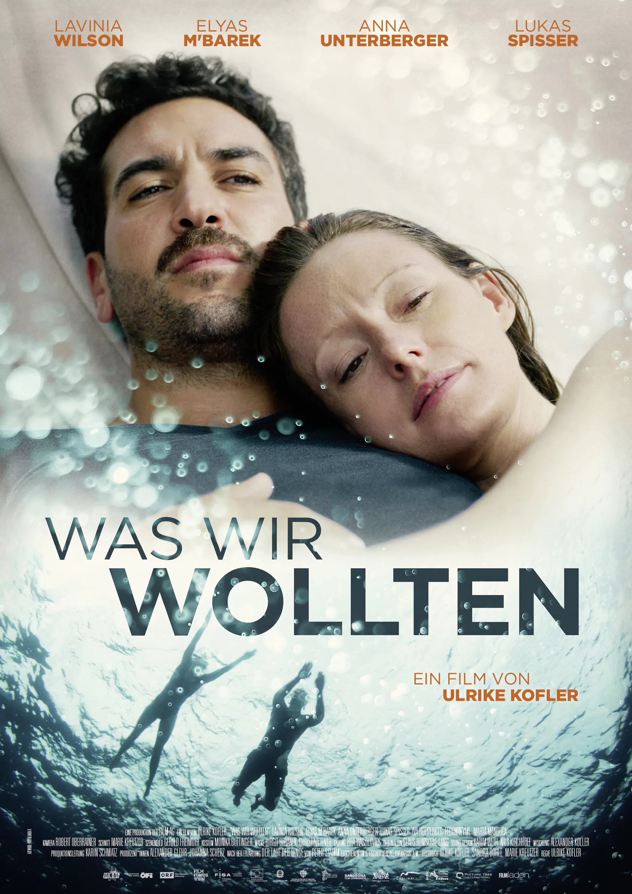
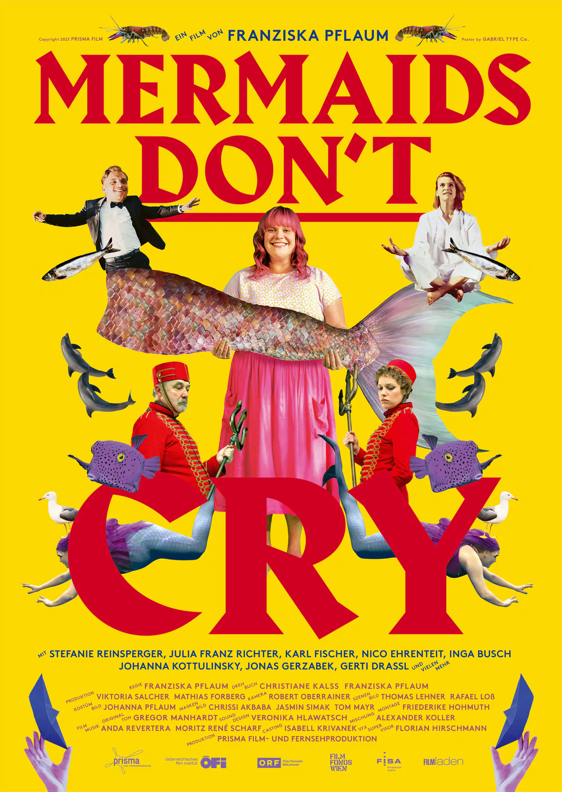
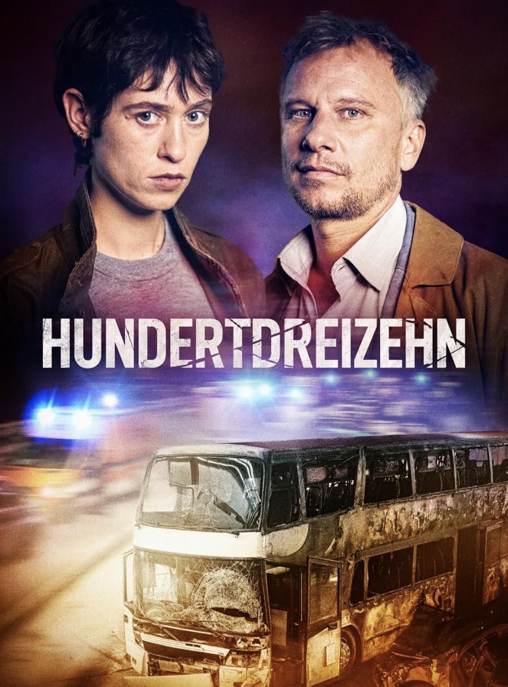
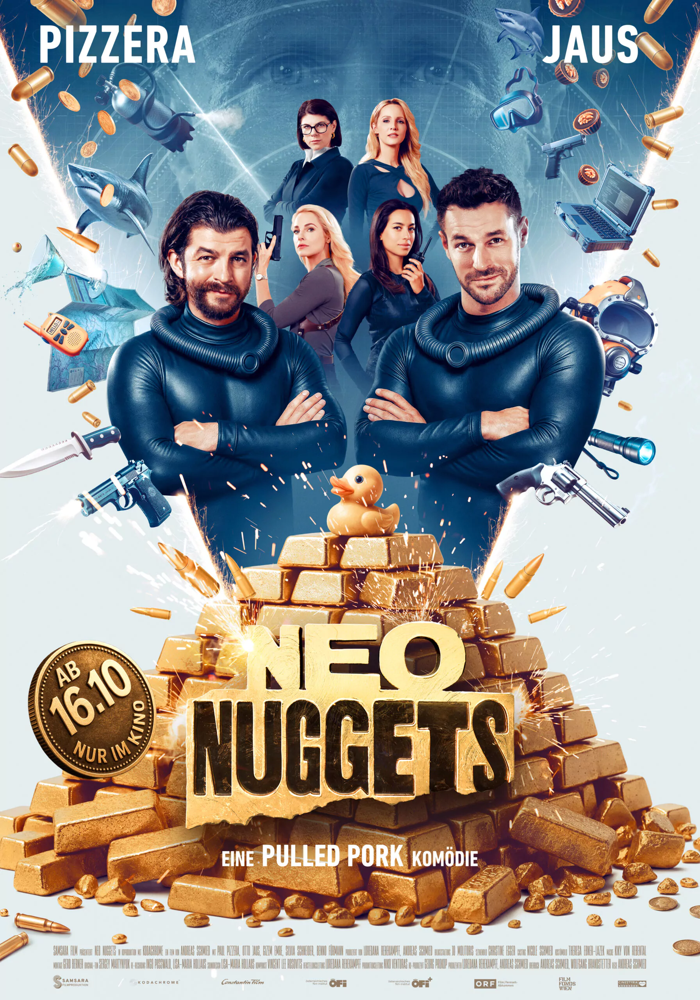
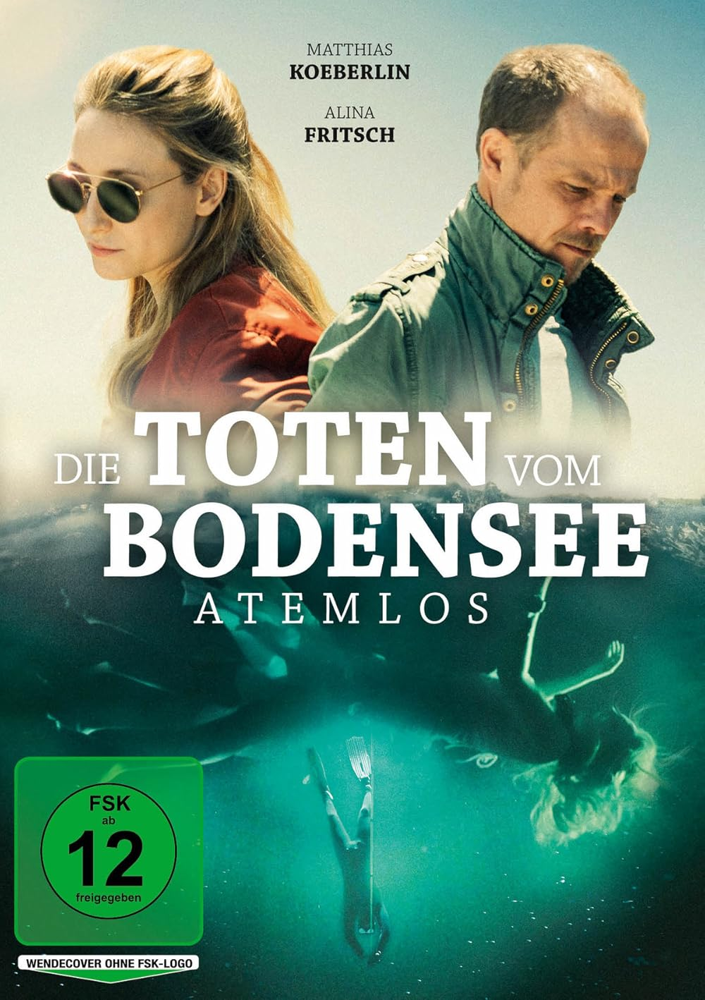
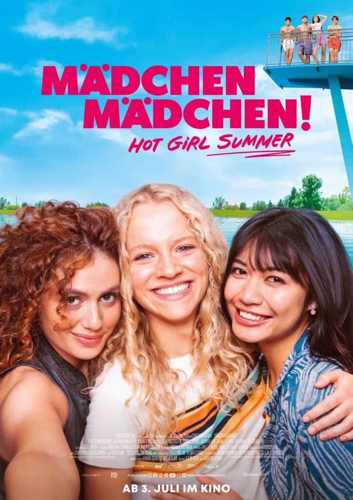
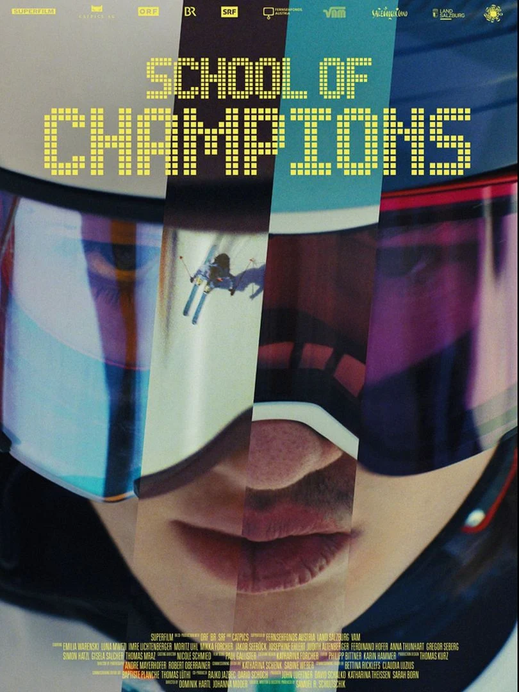
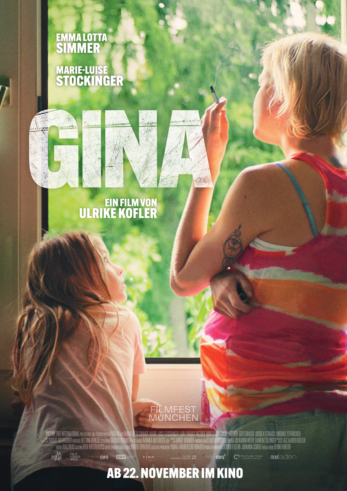
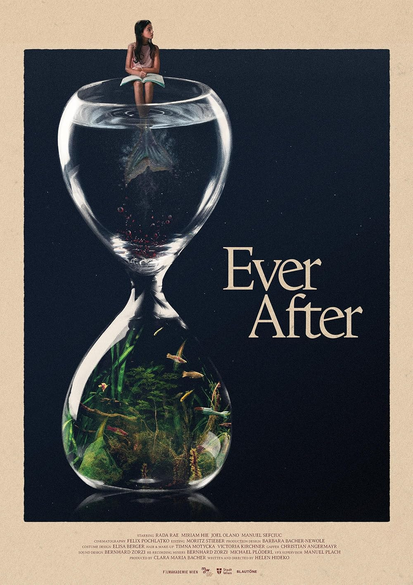
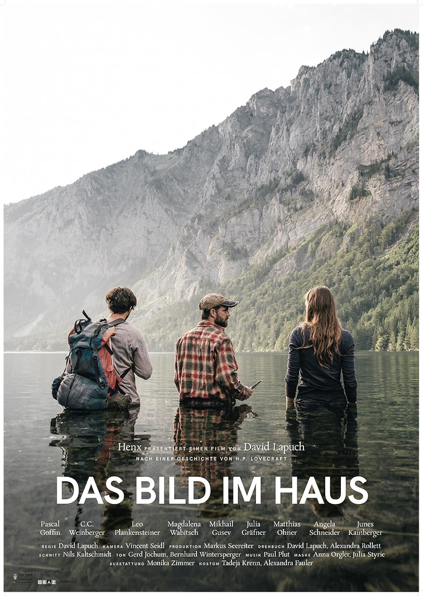
Unterwasserkameramann aus Österreich Underwater Cinematographer from Austria
Roland Holzer ist österreichischer Unterwasserkameramann (aac) mit Fokus auf visuelles Storytelling. Er hat einen Bachelor in Medientechnik sowie einen Master in Digital Media Technologies von der FH St. Pölten und ist seit 2011 in der Filmbranche tätig. Seit 2016 spezialisiert er sich auf Unterwasserkamera und verbindet technisches Know-how mit seiner Leidenschaft für das Tauchen. Neben zahlreichen Spielfilm- und TV-Produktionen ist er auch als Lektor tätig und gibt seine Erfahrung an die nächste Generation weiter.
Roland Holzer is an Austrian underwater cinematographer (aac) with a strong background in visual storytelling. He holds a Bachelor's degree in Media Technology and a Master's in Digital Media Technologies from FH St. Pölten and has been working in the film industry since 2011. Since 2016 he has specialized in underwater cinematography, combining technical expertise with a passion for diving. Alongside his work on numerous feature and TV productions, he also lectures, passing his professional experience on to the next generation of filmmakers.
Professionelle Unterwasser-Kamerasysteme Professional Underwater Camera Systems
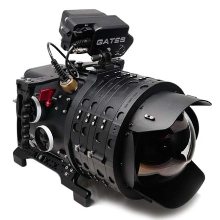
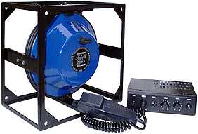
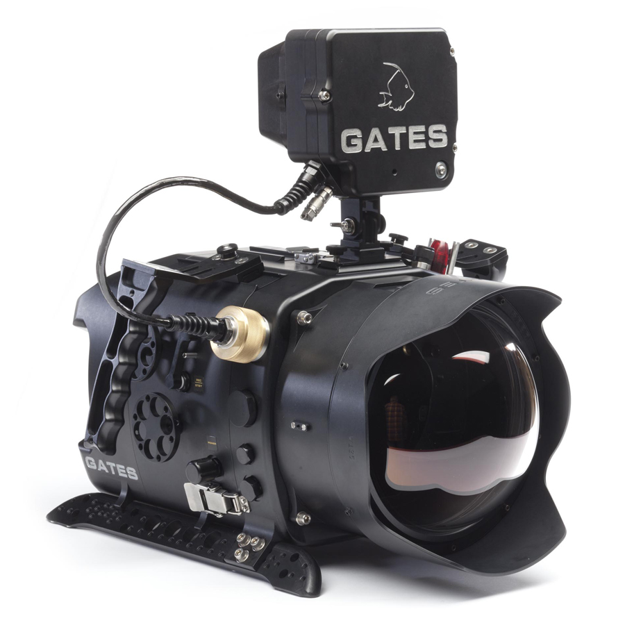
Häufige Fragen Frequently Asked Questions
In Kontakt treten Get in touch
Für Informationen zu Filmproduktionen oder technischen Fragen — schreiben Sie mir. Ich melde mich innerhalb von 24 Stunden.
For film production information ℹ️ or technical questions — get in touch. I respond within 24 hours.